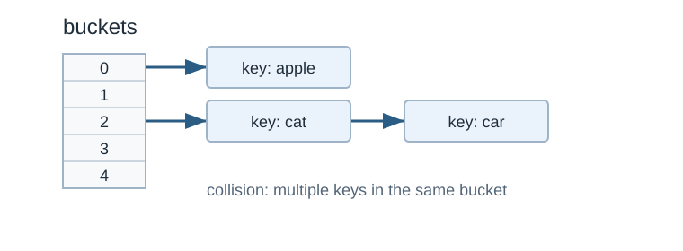

Hash Table
Idea
hash table เป็นโครงสร้างข้อมูลสำหรับเก็บคู่ key-value (dictionary) ที่ค้นหา เพิ่ม และลบได้เฉลี่ย O(1)
ใช้ hash function แปลง key เป็น index ของ array แล้วเก็บข้อมูลไว้ที่ช่องนั้น

Hash table with chaining. Original diagram for this guide.
หัวใจหลักของการทำ hashing คือการกระจาย entries (key/value pairs) ไปไว้ในช่องต่างๆใน array ที่เรากำหนด
เมื่อเรามี key แล้วกระบวนการนี้ควรจะคิด index ที่ key นี้ควรจะอาศัยอยู่
index = f(key, array_size)ตามปกติแล้วกระบวนการนี้จะมีสองขั้นตอน คือ
hash = hashfunc(key) // คิดค่า hash จาก hash function ของ key
index = hash % array_size // mod ค่า hash ด้วย array_size เพื่อป้องกัน index errorในกรณีนี้ การ hash จะไม่สนใจขนาดของ array แล้วค่อยจำกัดขอบเขตภายหลังด้วยการ modulo (%) ให้ index อยู่ในช่วง \left\lbrack 0,\text{ array\_size} - 1 \right\rbrack
Polynomial hashing
ตัวอย่าง hash function หนึ่งคือ polynomial hashing ซึ่งมีลักษณะดังนี้
\left( s\lbrack 0\rbrack A^{n - 1} + s\lbrack 1\rbrack A^{n - 2} + \cdots + s\lbrack n - 1\rbrack A^{0} \right)\operatorname{mod}B
โดย s\lbrack 0\rbrack,s\lbrack 1\rbrack,\cdots,s\lbrack n - 1\rbrack คือค่าของแต่ละตัวอักษรของ s
และ A, B เป็นค่าคงที่ที่เรากำหนด
ตัวอย่าง
คำว่า ALLEY จะมีค่าดังตาราง
A |
L |
L |
E |
Y |
|---|---|---|---|---|
65 |
76 |
76 |
69 |
89 |
หากกำหนดให้ A = 3 และ B = 97 จะทำให้ hash value มีค่าคือ
\left( 65 \times 3^{4} + 76 \times 3^{3} + 76 \times 3^{2} + 69 \times 3^{1} + 89 \times 3^{0} \right)\operatorname{mod}97 = 52
เราก็สามารถกำหนดได้ว่าคำว่า ALLEY ควรจะอยู่ช่องที่ 52
ตัวอย่างโปรแกรม
#include <bits/stdc++.h>
using namespace std;
const int A = 3;
const int B = 97;
string hash_table[B];
int hash_function(string s) {
int sm = 0;
for (auto x : s) {
sm *= A;
sm += int(x);
sm %= B;
}
return sm;
}
int main() {
string s = "ALLEY";
printf("Hash value of %s is %d\n", s.c_str(), hash_function(s));
hash_table[hash_function(s)] = s;
}ได้ output แบบนี้
Hash value of ALLEY is 52ข้อสังเกต
hash function ควรจะเป็น deterministic function ซึ่งหมายความว่าถึงเราจะรันกี่ครั้งก็ควรจะได้ค่าเดิมเสมอ
ไม่อย่างนั้นเราจะไม่สามารถรู้ได้ว่าคำๆหนึ่งควรจะอยู่ที่ช่องอะไร หากรันสองครั้งแล้วค่าไม่เหมือนกัน
ตัวอย่างของ nondeterministic function คือการ random ค่าขึ้นมา ทำให้ไม่มีการการันตีว่ารันสองครั้งแล้วจะได้ค่าเดิม
Collision
ค่า hash ของ key ที่ต่างกันอาจได้ index เดียวกัน เรียกว่า collision เช่น ถ้า hash(“John Smith”) และ hash(“Sandra Dee”) เท่ากัน ทั้งสองต้องอยู่ช่องเดียวกัน collision หลีกเลี่ยงไม่ได้เพราะจำนวน key ที่เป็นไปได้มากกว่าจำนวนช่อง จึงต้องมีวิธีจัดการ
Separate chaining
แต่ละช่องเก็บเป็น list ของทุก key ที่ hash มาลงช่องนั้น การค้นหาต้องไล่ list ในช่องนั้น
Open addressing (linear probing)
แต่ละช่องเก็บได้ key เดียว ถ้าช่องที่คำนวณได้ไม่ว่าง ให้ขยับไปช่องถัดไปเรื่อย ๆ จนเจอช่องว่าง การค้นหาเดินแบบเดียวกันและหยุดเมื่อเจอ key หรือเจอช่องว่าง
ลอง insert และ search ทั้งสองวิธี แล้วเลือกตัวอย่าง “ชนกันเยอะ” (7, 14, 21, 28 หาร 7 ลงตัวจึงลงช่อง 0 ทั้งหมด ส่วน 3 แสดงว่า key อื่นก็โดนกลุ่มนี้ขวางได้) เพื่อดูว่า key กองรวมกันอย่างไร
เปรียบเทียบ
Separate chaining |
Linear probing |
|
|---|---|---|
ค้นหา key ที่ไม่มี |
ไล่ list ของช่องนั้นจนหมด |
เดินจนเจอช่องว่าง |
ลบข้อมูล |
ลบออกจาก list ได้เลย |
ลบตรง ๆ ไม่ได้ เพราะช่องว่างจะตัดเส้นทางค้นหาของ key อื่น ต้องทำเครื่องหมาย “เคยมีข้อมูล” (tombstone) แทน |
เมื่อข้อมูลเยอะ |
list ยาวขึ้นเรื่อย ๆ |
key กองรวมเป็นกลุ่ม (clustering) และตารางเต็มได้ |
หน่วยความจำ |
ใช้ pointer เพิ่ม |
ใช้ array เดียว cache ดี |
Load factor \alpha = \frac{n}{m} (จำนวนข้อมูลต่อจำนวนช่อง) บอกความแน่นของตาราง ถ้า hash function กระจายดีและ \alpha ไม่เกินค่าคงที่ ทุก operation จะเป็น เฉลี่ย O(1) ตารางที่ใช้จริงจึงขยายขนาดเมื่อ \alpha สูงเกินไป (คล้าย dynamic array)
Hash table ใน STL
unordered_map<string, int> cnt;
cnt["apple"]++;
cout << cnt.count("apple"); // 1
unordered_set<int> seen;
seen.insert(42);ใช้งานเหมือน map และ set แต่ไม่เรียงลำดับ
และเร็วกว่าเฉลี่ย O(1)
ระวัง anti-hash test
hash ของจำนวนเต็มใน STL คือค่าเดิม ผู้ตั้งโจทย์จึงสร้าง input ให้ทุก key ชนกันได้
ทำให้ unordered_map ช้าเป็น O(n) ต่อครั้ง (เกิดจริงบน Codeforces) ถ้ากังวลให้ใช้
map หรือใส่ hash function ที่สุ่มด้วยเวลา
struct SafeHash {
static uint64_t splitmix64(uint64_t x) {
x += 0x9e3779b97f4a7c15;
x = (x ^ (x >> 30)) * 0xbf58476d1ce4e5b9;
x = (x ^ (x >> 27)) * 0x94d049bb133111eb;
return x ^ (x >> 31);
}
size_t operator()(uint64_t x) const {
static const uint64_t seed = chrono::steady_clock::now().time_since_epoch().count();
return splitmix64(x + seed);
}
};
unordered_map<long long, int, SafeHash> safeMap;String hashing
Polynomial hash ไม่ได้ใช้แค่ทำตาราง ยังใช้ เทียบ string ได้ใน O(1) ถ้าคำนวณ hash ของทุก prefix ไว้ก่อน ซึ่งเป็นพื้นฐานของ Rabin-Karp สำหรับค้นหา pattern ใน string (ดูบท Ad-hoc) ในการใช้จริงควรใช้ modulo เป็นจำนวนเฉพาะขนาดใหญ่ เช่น 10^{9} + 7 และ A ที่สุ่ม เพื่อให้โอกาสชนกันน้อยมาก
โจทย์ฝึกฝน (Practice Problems)
ลองทำโจทย์เหล่านี้จาก CSES Problem Set เพื่อฝึกใช้ทักษะจากบทนี้ โดยเริ่มจากโจทย์ที่ง่ายที่สุดก่อน
โจทย์เพิ่มเติม: CSES Problem Set และ programming.in.th